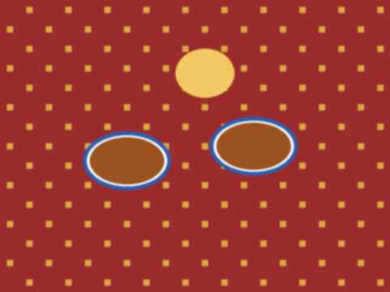

Archive for the ‘results’ Category
Saturday, February 22nd, 2020 · 11:20 pm
Sarchashma United vs Ak Gül, and the Misgaron Boys vs the uncles. The final should be 7 March. The club has been full for 10 weeks. Dilshat-aka looks tired but happy. The wall has 12 coloured names. Each year more.
Saturday, February 24th, 2018 · 11:30 pm
Final: Temir-Kapka 5 vs the Lagers. 15 years of Old City hate, played out on nuke.
 The back room on final night. The technician is on the chair with the router, upper left.
The back room on final night. The technician is on the chair with the router, upper left.The room was so full that the technician stood on a chair holding the router. The Lagers lost, they said it was lag. Everybody said "lagers with lag". The captain of the Lagers laughed. A good sign.
I think the real winner is the room, because 60 people came and nobody had a fight.
Sunday, February 19th, 2017 · 11:40 pm
For the first time in 4 years, the final had no power cut. Dilshat-aka bought a small generator last month, he put it behind the shop, and it sat there with its engine going, like a cow at a wedding. The final was perfect.
Winner: The "uncles" team! Average age 38, they play like old tigers, a bit slow but never wrong. The oldest one, the taxi driver, got the cup and said "my daughter has the cup at home from last year, now we have two". It took us 5 seconds to understand that the daughter is the captain of Ak Gül.
Sunday, January 24th, 2016 · 9:15 pm
Semifinals and the final in one night, starting at 8 p.m. on Saturday. 12 hours later I was at the counter paying for the night pass for the 5th time that month (18 som, and for the organiser Dilshat-aka said it is "17.50", which is the best discount I have ever had).
Winners: Ak Gül. The girls won the cup. 16-9 on nuke. The Misgaron Boys captain bowed and kissed the cup, and then he was sad for 3 days.

The copper cup (with the OFFICIAL dent) next to a glass of tea. The girls drank from the cup. First time somebody did.Saturday, December 21st, 2013 · 11:10 pm
Short results.
- Misgaron Boys 16-7 Sarchashma United
- Temir-Kapka 5 16-14 The Lagers (OVERTIME, my heart)
- Citadel Rush 16-3 Kalan Darwaza. Sorry Kalan Darwaza. Come back next week.
A boy from Kalan Darwaza started crying when he lost the last round on dust2. We made him tea. Then the Citadel Rush captain also made tea, then the whole room was drinking tea. A strange tournament.